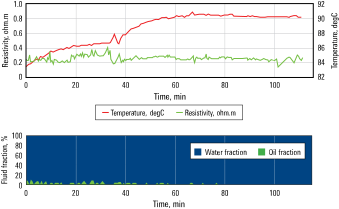

Challenge
Acquire formation fluid samples and pressure measurements in a highly deviated wellbore that intersected pressure-depleted zones with increased risk of differential sticking.
Solution
Use formation sampling-while-drilling (FSWD) service to acquire reservoir-representative fluid samples and accurate pressure data to determine formation water salinity and to enhance completion and production planning.
Results
- Acquired fluid samples with less than
- 1% contamination.
- Obtained all fluid samples and pressure measurements in one run.
- Completed sampling operations in 2 hours per station, avoiding differential sticking.
- Saved 3 days by eliminating the need to conduct further formation testing in two additional wells.
Acquire water and gas samples for field development plan
To further develop a field offshore Malaysia, the Hess Corporation needed a complete understanding of the reservoir, particularly fluid properties. Unfortunately, no critical data was available from the existing exploration well. As a result, Hess needed to obtain formation fluid and gas samples and formation pressure measurements from three wells. Because these three wells were highly deviated and the well paths would likely intersect pressure-depleted formations, Hess was concerned about differential sticking during sampling.
The FSWD service provided real-time fluid fraction measurements that showed a decrease in the presence of oil-base drilling filtrate. This information allowed Hess to begin sampling after the cleanup process was completed. As indicated by the numbers above, Hess took a total of four samples—at 80.2 min (1), 89.3 min (2), 96.1 min (3), and 106.3 min (4).
Obtain fluid samples and perform downhole analysis
Schlumberger recommended obtaining the downhole pressure and fluid samples using the FSWD service. The service includes an advanced optical spectrometer and resistivity cell that both monitor the reservoir fluid properties and cleanup process as fluid is pumped through the flowline. When the pumped fluid meets the operator’s requirements, a downlink can be sent from surface to capture the formation fluid. Multiple sample bottles can be filled at a single sampling station, and as many as 12 fluid samples can be captured in a single run.

The real-time temperature and resistivity data indicated that the fluid being pumped was increasingly representative of the reservoir fluid. Simultaneously, fluid fraction data showed a decrease in the presence of oil. Hess used this data to begin obtaining reservoir-representative samples at 80.2 min.
Create field development plan sooner with increased knowledge
Using the FSWD service, Hess collected 4 fluid samples, 2 gas samples, and 21 formation pressure measurements over 12 hours while also avoiding differential sticking. Downhole testing showed the samples were contaminant-free, and later lab results confirmed that the samples were representative of the reservoir. Further sampling of the asset in a second and third well was deemed unnecessary, saving Hess 3 days.
This was the first sampling operation conducted by Hess in this field. With the collected water samples, the operator gained insight into formation water salinity, which is critical to calculating water saturation and optimizing completion design and production planning. The pressure data will help the operator understand zonal connectivity within the field.
Challenge
Determine capability of new sampling method to optimize sampling and formation pressure testing processes.
Solution
Use formation sampling-while-drilling (FSWD) service to obtain reservoir-representative downhole samples in a wildcat exploration well and provide in situ fluid properties in
Results
- Transmitted fluid compositions for C1, C2, C3, C4, C5, C6+, and CO2 in real time for first time while drilling.
- Delivered lab-quality, in situ fluid property analysis, which would save an estimated 10 weeks of lab time in future sampling operations.
Identify new sampling method to save time and money in future operations
Eni US Operating Co. wanted to optimize formation sampling and formation testing processes to save time and money in future wells. The operator conducted a field test while drilling an exploratory well in the Mississippi Canyon area of the Gulf of Mexico in Miocene turbiditic sands. The target zone was located at a water depth of about 5,800 ft with uncertain reservoir characteristics and fluid properties. A new sampling method would need to be capable of acquiring pretests, capturing clean downhole samples and fully describing reservoir pressures at a cost and time savings.
Acquire individual fluid composition analysis up to C5 with FSWD service
Schlumberger recommended using the FSWD service to acquire samples, analyze the samples in real time, and measure formation pressures from the exploratory Mississippi Canyon well. This service is added to the downhole drilling assembly and collects reservoir-representative samples while drilling. Traditionally, sampling happens about a day after drilling, which often results in contamination of the reservoir by the drilling fluid filtrate. The FSWD service accurately delivers the following in situ hydrocarbons properties: individual compositions from C1 to C5, C6+, GOR, fluid color, hydrocarbon and water fractions, flowline fluid resistivity, temperature and pressure and formation volume factor, CO2.
PVT lab analysis results show good agreement with real-time, in situ analysis of fluid properties.
Transmitted individual hydrocarbon analysis in situ, delivered lab-quality fluid profiling
The FSWD service collected and analyzed six samples downhole in real time, setting an industry-first for the transmission of detailed in situ fluid properties. The FSWD service estimated contamination and time to clean up; performed fluid identification and typing; and measured GOR and fluid composition (C1 to C5, C6+, and CO2).
These results were verified 10 weeks later by lab results, which showed good agreement with field results on every measure. Contamination was estimated in real time to within ±2% of the laboratory-determined values. Pretests, pressure measurements, and fluid gradients were also successfully taken during the operation. A total of 28 pretests were taken—17 while drilling and 11 while pulling out—that provided Eni a full description of the reservoir pressure and fluid gradients.
By delivering lab-quality results while drilling, Eni concluded that the FSWD service is a reliable sampling service capable of gathering clean samples and good measurements while demonstrating a time savings of about 10 weeks.
Eni determined that the quality and amount of real-time data (shown above) from the FSWD service would enable it to accurately determine pressures, fluid composition, and fluid fraction in future wells.